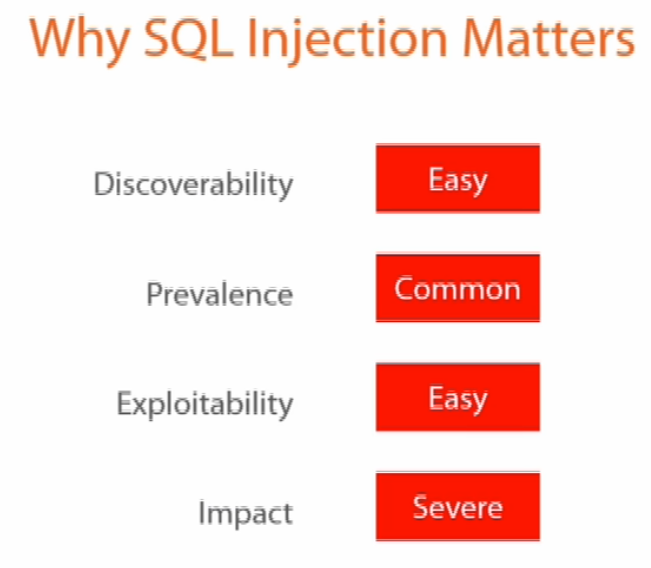

Why SQL Injection Matters
SQL injection (SQLI) was considered one of the top 10 web application vulnerabilities of 2007 and 2010 by the Open Web Application Security Project.
Let's categorize these risks.
1) DISCOVERABILITY. Discover sites with risks is really, really EASY. You can type in Google some search and you'll find a lot of sites with risks.
2) PREVALENCE. There's a high prevalence of vulnerabilities so, it's more usual than you can think. It's COMMON. SQL Injection is very common with PHP and ASP applications due to the prevalence of older functional interfaces. Due to the nature of programmatic interfaces available, J2EE and ASP.NET applications are less likely to have easily exploited SQL injections.
3) EXPLOITABILITY. There are a lot of tool to exploit out there. It's EASY to exploit.
4) IMPACT. SQL injection attacks allow attackers to spoof identity, tamper with existing data, cause repudiation issues such as voiding transactions or changing balances, allow the complete disclosure of all data on the system, destroy the data or make it otherwise unavailable, and become administrators of the database server. It's SEVERE.
